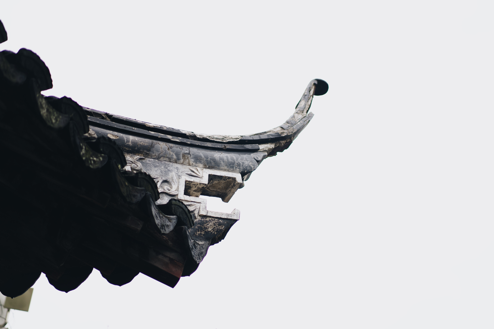

Suzhou Museum, 2019.12
Shot by Sony A7M3 + 55mm f1.8
On the Last day of 2019, I went Suzhou to visit one of my best childhood friend who is studying in Suzhou, one of the most beautiful places that kept traditional Chinese culture and art. He was desired to take me to the Suzhou Museum.
The Museum was fantastic, on our way to the exit, we get lost. The zig-zag inside the traditional Chinese garden was just like a maze. But one that won't make us feel creepy or scared, it is a kind of comfort and visual enjoyment. I found this dragon-like eave in one of the roof tops.
It was not very easy to take this picture, since it is the roof, I had to climb up a bit to capture the picture. The reason why I did not put anything else in the frame is because I think the object is so sacred and I would not like anything else to 'disturb' it.